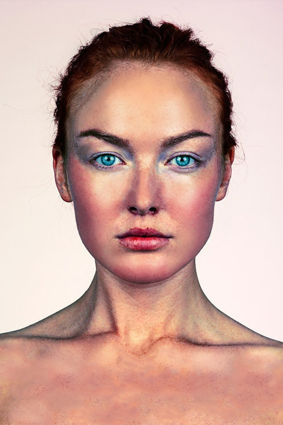
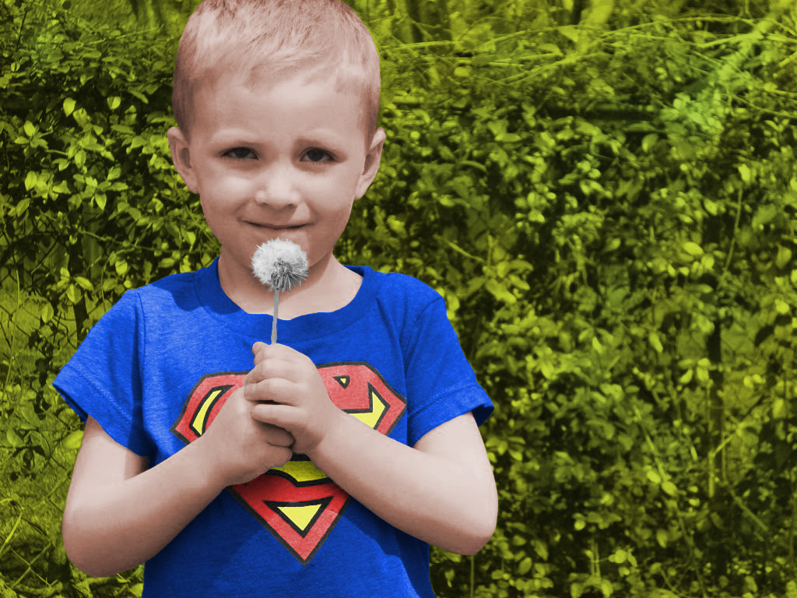
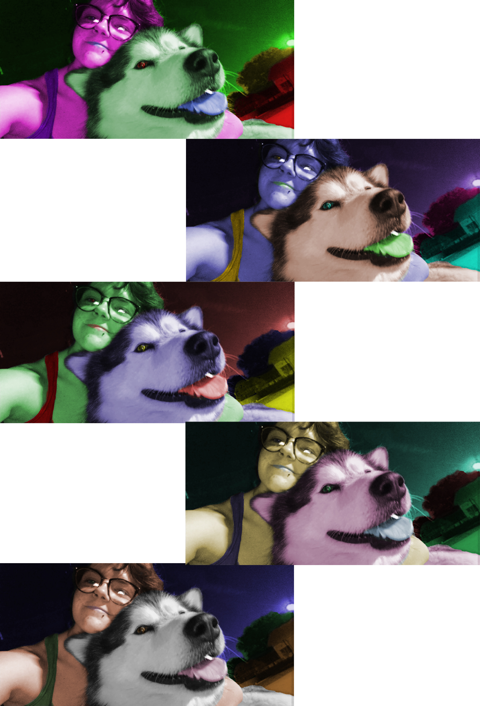
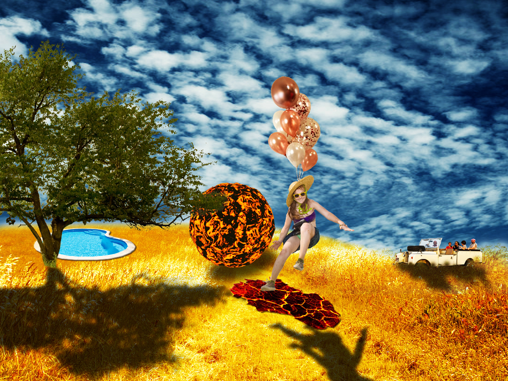
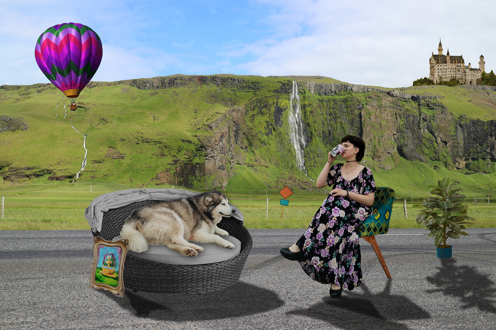

Vježba 2 - Krivulje
Krivulje u fontuVježba 3 - Illustrator
CrtežVježba 4 - Gradijenti, transparencija
Drugi crtežProjektni zadatak 1
Crtež 3Vježba 5 - retuširanje
Vježba 6 - koloriranje
 Vježba 7 - fotomontaža
Projektni zadatak 2
Vježba 8 - Kinemagraf


Vježba 9 - Obrada videa
Vježbe 10 i 11 - Izrada web stranice
Moja stranica!